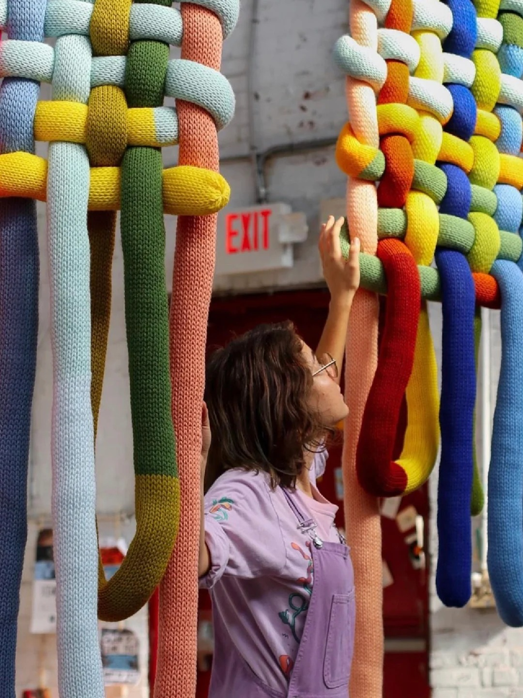
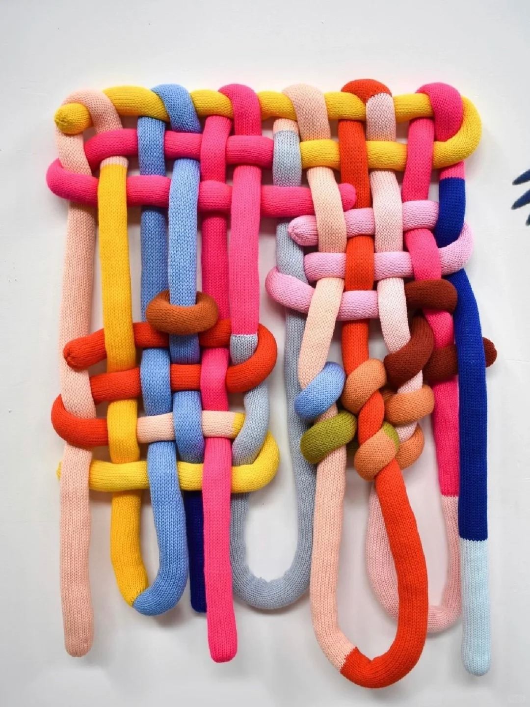
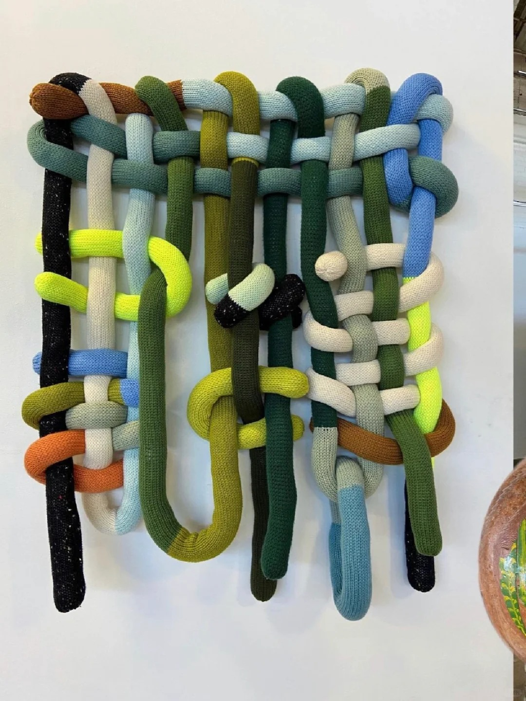
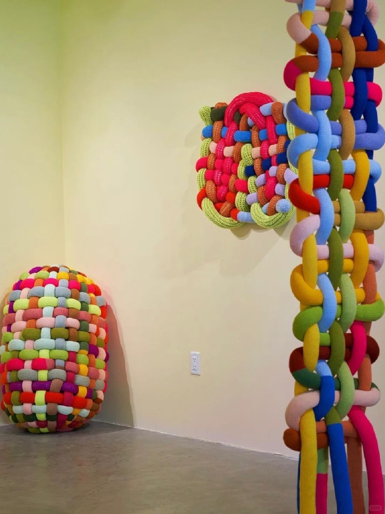
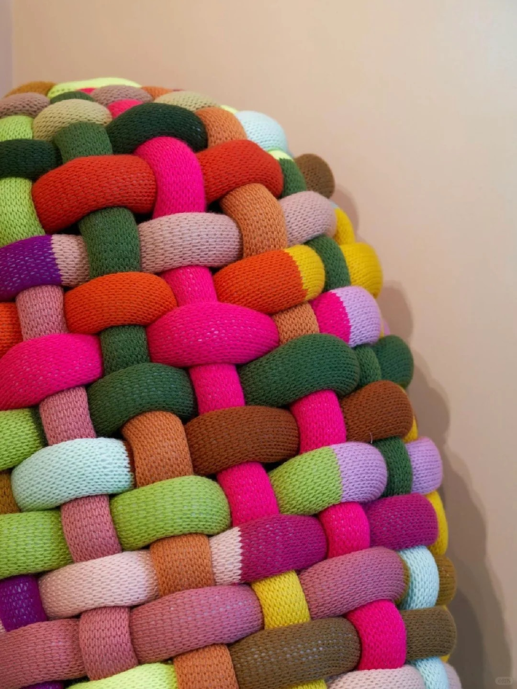
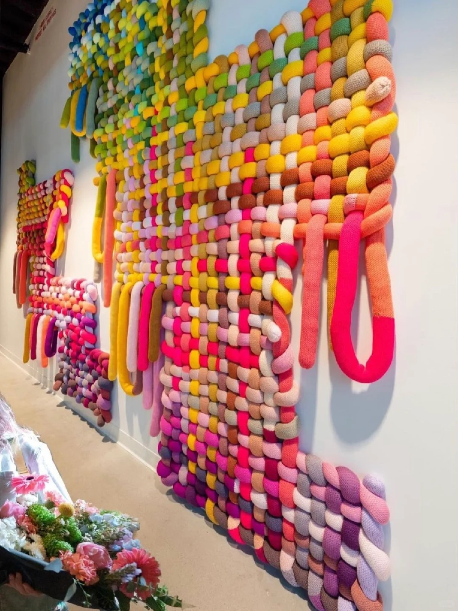

Healing Artists｜Katrina Sánchez
Panamanian interdisciplinary textile artist Katrina Sánchez specializes in soft sculpture, exploring emotional themes of connection, healing, and safety through texture, knitting, and color. interested in the softness of textiles, Sánchez creates interactive knitted soft sculptures by weaving and filling colorful “knitted noodles”. Sánchez is interested in the softness of textiles, weaving and filling colorful “woven noodles” to create highly interactive woven soft sculptures.
Influenced by Sheila Hicks and Ernesto Nato, Sánchez's work explores ideas of group interaction and playful healing. His large-scale fiber sculptures of diverse forms amplify the richness and texture of knitting, evoking the viewer's desire to touch and play. The familiarity of the textiles also provides a collective sense of intimacy, warmth, and joy, leading the viewer to playfully explore the mundanity of the everyday.
For Sánchez, her fiber sculptures are family. The rich, bright color palette, like the textiles her grandmother used to decorate her house, evokes the joyful and secure Panamanian home of her childhood. This concept spills over into her art as a whole, and Sánchez hopes that the viewer will see the act of embracing the sculpture as a way of healing, as a way of reconnecting with their surroundings.






Make emotions tactile.